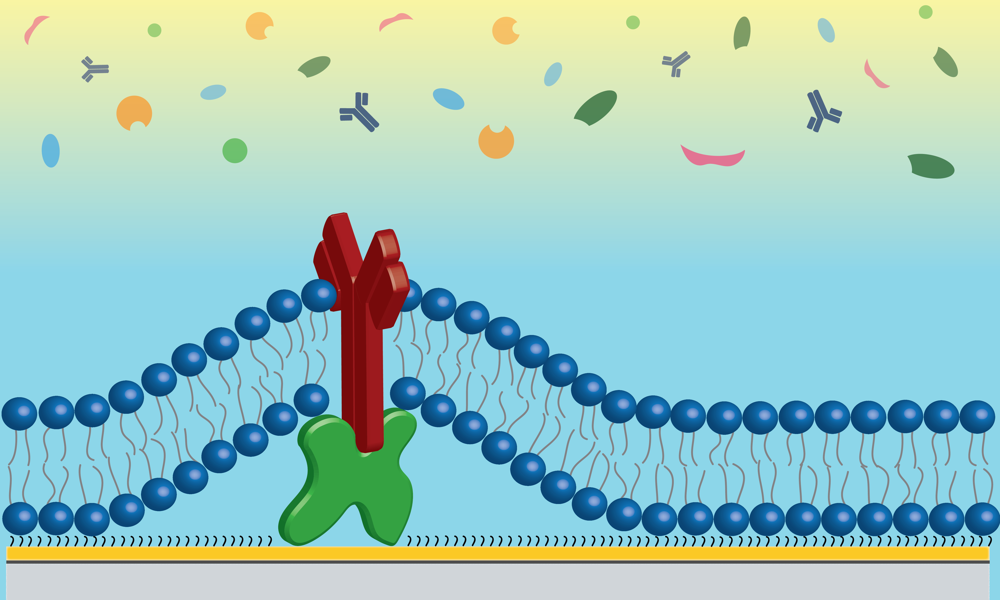

Through my time in graduate school I have worked on various projects, an overview of these projects can be seen here. If you are interested in more details on any particular project please check out the in depth explanation post for that project or Contact Me.

One of the major bottlenecks we faced in lipidomic analysis using MALDI-MS was the need to manually process spectra. As such I built an R script to pull in and process our raw spectra, followed by selection of consistent peaks and combination of resulting peak intensities for implementation in machine learning algorithms. This enables us to quickly process raw spectra and identify peaks of interest for further analysis and identification.

Lipids constitute a major portion of our research efforts both as platforms and targets for our sensors. Lipids are formualted as lipid vesicles with selected constituents for use in self assembled lipid membranes or as curvature mimicking substrates. To visualize and understand how the consituents of these membranes are distributed I have developed an R script to build randomly distributed lipid vesicle models and iterate through many vesicle models to calculate the average distance between constituents. This enables lipid formulations to be carefully tuned to match project needs with built in visualization of 3D lipid structures.
Antifouling Lipid Membranes

Our group has demonstrated the effectiveness of lipid membranes as an antifouling substrate to improve biosensor performance. My work focuses on expanding these capabilities and understanding how and why these substrates are so effective. To this end we have identified zwitterionic (POPC) and positively charged (EPC) lipid membranes as effective antifouling surfaces but have found the conditions under which they provide these antifouling effects are distinct and rely on the underlying sensor surface properties. Demonstrating that if tuned to fit sensor needs lipid bilayers can be utilzied to provide highly robust reductions in unwanted nonspecific interactions that would convolute sensor signal.